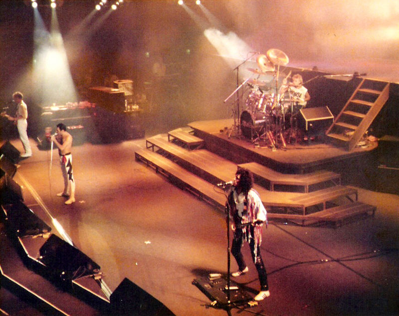
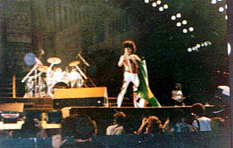

Crises e Polêmicas: 1983–87
Em 1983, quase todos os integrantes do Queen se concentraram em projetos paralelos. Brian May gravou e lançou o Star Fleet Project com a participação de Eddie Van Halen, além de trabalhar como produtor musical em alguns álbuns. Freddie Mercury divulgou "Love Kills" como parte da trilha sonora do filme Metropolis, que estava sendo relançado. A faixa em si tinha surgido nas sessões de The Game e estava inacabada. Roger Taylor, que em 1981 foi o primeiro a lançar um trabalho solo, Fun in Space, estava preparando seu sucessor, o qual seria Strange Frontier. John Deacon foi o único a não produzir algo, pois acreditava que não havia nada a fazer no meio musical que não fosse o Queen. Assim, concentrou-se no nascimento de seu quarto filho, Joshua.
Nesta época, em entrevistas, devido aos materiais solo, eram questionados se estavam se separando. Freddie, por exemplo, disse que não, mas uma pausa temporária estava acontecendo. Nesta época, o cantor gravou três músicas num estúdio caseiro de Michael Jackson, para um projeto futuro de duetos entre os dois músicos. No entanto, as sessões nunca foram concluídas, e existem várias versões para isso. Uma é que o uso de drogas do vocalista do Queen incomodava profundamente Jackson, outra que a lhama de estimação do artista irritou Mercury a ponto de desistir de gravar algo. Logo afirmaria que os dois se afastaram naturalmente por conta de agenda, e porque Michael se isolou de contatos sociais. Duas das músicas seriam utilizadas em um futuro álbum solo de Michael Jackson, mas com a participação de Mick Jagger.
Naquele ano, John Deacon se reuniu com um diretor de vídeo, o qual queria que o Queen produzisse mais uma trilha sonora. Em nome da banda, o baixista aceitou, e com os demais passou a trabalhar em novas músicas. No entanto, a ideia evoluiu para um álbum quando o diretor afirmou que não tinha recursos para investir no material. Após o material ter sido escrito, os integrantes foram selecionar as faixas definitivas para The Works, e as músicas de Roger Taylor não agradaram nenhum deles. Mercury disse ao baterista para trabalhar em uma faixa nova, senão ficaria sem canções para colaborar.
Assim, Taylor começou a escrever "Radio Ga Ga", que mais tarde tornaria-se seu maior sucesso autoral na carreira do Queen. No entanto, o relacionamento entre os membros ainda era tenso; Freddie aceitou gravar apenas por questões contratuais, pois estava desmotivado e esquivo, tendo animado-se posteriormente. Em razão do extremo fracasso de Hot Space, era consenso geral entre os quatro de que era necessário produzir um material mais condizente com a identidade já construída pelo Queen. Brian May investiu em mais peso em sua guitarra, flertando com o heavy metal em "Hammer to Fall", enquanto Freddie construía baladas como "It's a Hard Life". John Deacon, por sua vez, assinou um dos principais hits do Queen, "I Want to Break Free". No fim das contas, mesmo em uma série de atritos, o quarteto tinha o pensamento de que o grupo era mais importante, ideia que os manteve unidos.
Após o lançamento, o trabalho recebeu críticas mistas e mesmo não repetindo a fórmula do anterior, continuou a vender pouco. No clipe de "I Want to Break Free", os membros da banda atuaram vestidos de mulher, em paródia à série Coronation Street. O material, que tinha tom humorístico, foi bem recebido no Reino Unido, mas não nos Estados Unidos, onde foi erroneamente interpretada por alguns como uma referência ao meio gay. Como resposta, o Queen ignorou o país e nunca mais fizeram um show na América do Norte.
Em outubro de 1984, a banda se apresentou em Sun City, próximo a Joanesburgo, na África do Sul. O país estava em pleno regime do apartheid, e o Queen foi recomendado a não tocar lá. Como efeito, a imprensa criticou fortemente a atitude do quarteto. Mas quando nenhum de seus integrantes foi chamado para participar da gravação de "Do They Know It's Christmas?", do Band Aid, a situação desanimou muito o grupo, que por um momento pensou em encerrar as atividades. Ao mesmo tempo, uma canção de natal do Queen era divulgada, "Thank God It's Christmas".
Na mesma época, a banda voltou ao Brasil para participar da primeira edição do Rock in Rio, ocorrida na Barra da Tijuca, na Rio de Janeiro. A apresentação, que reuniu cerca de 300 mil pessoas foi extremamente positiva, contendo no repertório faixas de todas as fases do Queen. "Love Of My Life" cantada, em grande parte, pelo público foi um dos momentos mais marcantes do festival. Tempos depois, era lançado Mr. Bad Guy, primeiro trabalho solo de Freddie Mercury.
